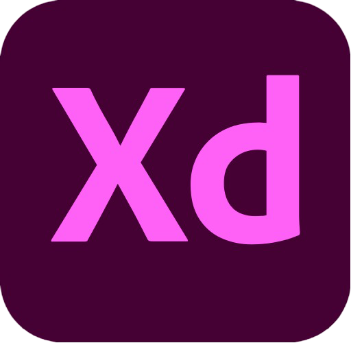
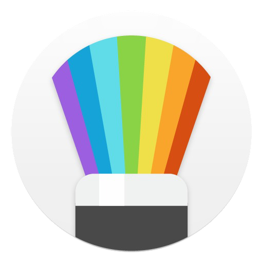
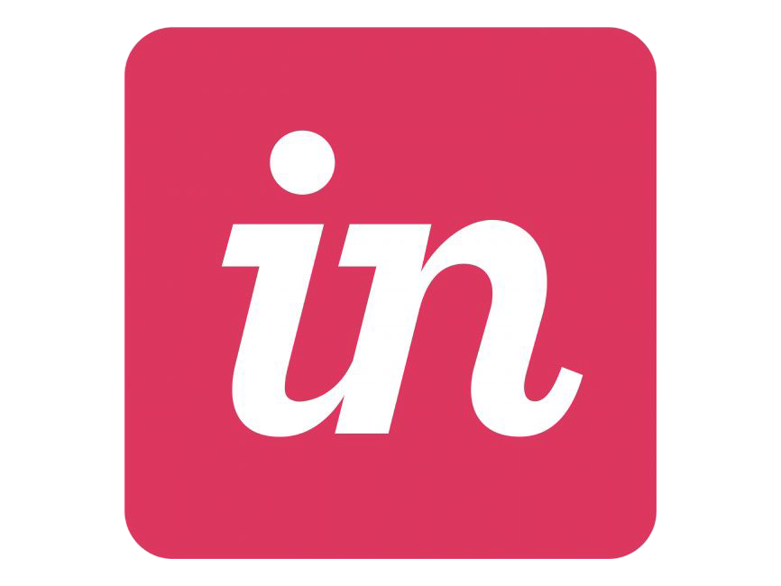

KEAHLIAN
Tools
.png)
Figma

Adobe XD

Sketch

Invision
Invision
Keahlian Utama Desain UI
- Prototyping, Wireframing, dan Desain Antarmuka: Membuat prototipe, wireframe, dan desain antarmuka untuk aplikasi web dan mobile.
- Desain Responsif: Mendesain antarmuka yang optimal untuk berbagai ukuran layar (mobile, tablet, desktop).
- Interaksi Pengguna (UX/UI): Membuat alur pengguna yang intuitif dan pengalaman yang seamless.
- Desain Visual: Penguasaan tipografi, warna, dan elemen visual lainnya untuk menciptakan desain yang estetis dan fungsional.
Keahlian Non-Teknis
- Kolaborasi Tim: Pengalaman bekerja dengan pengembang dan tim produk untuk menghasilkan solusi desain yang efektif.
- Manajemen Proyek: Kemampuan mengelola berbagai proyek desain sekaligus dengan tenggat waktu yang ketat.
- Komunikasi: Menyampaikan ide desain dengan jelas kepada klien dan tim pengembang.
Mengapa Mempekerjakan Saya?
Kenapa Memilih Saya sebagai UI Designer Anda? Saya tidak hanya fokus pada menciptakan desain yang estetik, tetapi juga memastikan bahwa desain saya memberikan pengalaman pengguna yang optimal. Saya bekerja dengan prinsip desain yang berbasis data, memastikan setiap keputusan desain dibuat untuk meningkatkan fungsionalitas dan kenyamanan pengguna.
Dengan pengalaman saya dalam berbagai proyek, saya selalu memastikan bahwa saya memahami tujuan bisnis Anda dan kebutuhan pengguna sebelum memulai proses desain. Saya berkomitmen untuk menghasilkan desain yang tidak hanya indah secara visual tetapi juga memudahkan interaksi dan mencapai hasil yang diinginkan.
Keunggulan Saya
- Desain yang responsif dan sesuai kebutuhan.
- Kemampuan untuk bekerja dengan tim dan berkolaborasi dengan pengembang.
- Pendekatan yang berorientasi pada pengguna dengan pemahaman mendalam tentang UX.